<ons-page var='lkl.page.traceresult'> 
<ons-toolbar>
	<div class="left">
		<ons-back-button>返回</ons-back-button>
	</div>
	<div class="center">选择所在购物场所</div>
</ons-toolbar> 
<div  class='h100 pagecontentgraycolor'>
	<div align="center"  style="padding-top: 20%"> 
		
	</div>
	<div style="padding: 10% 15px;">
		<p class="text_small colordgraytxt" style='overflow:hidden;text-align: center;'>
			"北京E追溯" 已被禁止使用定位权限 </br> 请在权限管理中启用</p>
	</div>
	<ons-row align='center' ng-click='shopData.showShopList()'>
		<ons-col>
		<span class="greenborderbtn itemtexttitle text_small" style='width:210px' >手动定位</span>
		</ons-col>
	</ons-row>
</div>	
</ons-page>